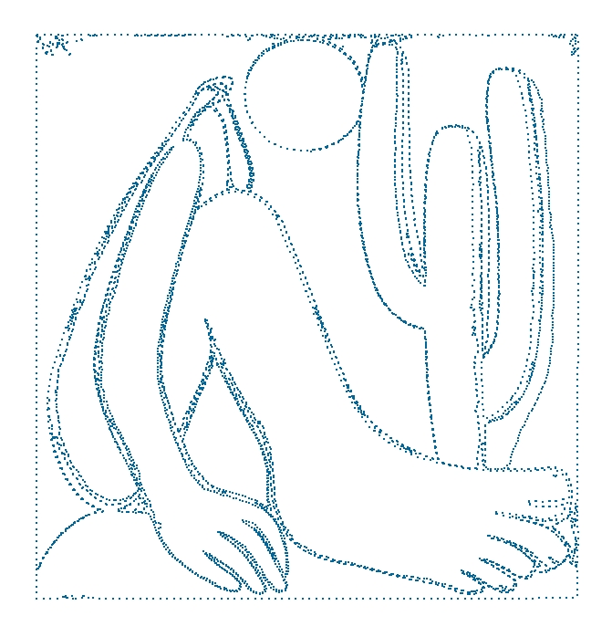

Curiosidades
Dicas, páginas interessantes, conteúdo informativo… tudo que envolve R, estatística, aprendizado de máquina e diversão será compartilhado nesta página.
Aproveitem!
R/RStudio
Addins do RStudio
Já ouviu falar dos Addins? Os Addins são interfaces desenvolvidas com Shiny voltadas para facilitar a execução de algumas funções. Aqui você encontra uma lista dos addins disponíveis e um script contendo alguns addins interessantes já separados para vocês instalar.
Análise Exploratória dos Dados
Você sabia que o R possui pacotes que realizam uma análise exploratória dos dados de maneira automática? Ao rodar as funções especializadas para isso, ele gera relatórios em HTML ou PDF que auxiliam a visualizar os tipos de variáveis, a existência de dados ausentes, dentre outras características. Aproveite o script e faça a sua própria análise!
Cheet Sheets
As cheet sheets abaixo facilitam o aprendizado e o uso de alguns dos pacotes do R/RStudio. Todas elas foram obtidas por meio deste link.
- Comandos Básicos do R
- Aprendizado de Máquina 1 2 3
- RMarkdown
- RStudio IDE
- Shiny
- Visualização de Dados
Diversão
Jogue e crie memes com o R. Abaixo você encontra alguns scripts com os pacotes e as funções necessárias para se divertir!
Gráficos
Os links abaixos apresentam páginas, pacotes ou scripts voltados para a contrução de gráficos no R.
- Esquisse: add-in do RStudio que permite a contrução de gráficos por meio do pacote ggplot2 sem a necessidade de linhas de comando.
- from Data to Viz: árvore de decisão que leva a um conjunto de visualizações potencialmente apropriadas para representar seu conjunto de dados via R.
- Plotly: pacote do R para desenvolvimento de gráficos iterativos.
- Temas para o ggplot2: script contendo diversos temas diferentes para deixar os gráficos criados com o pacote ggplot2 mais bonitos.
- The R Graph Gallery: projeto desenvolvido por Yan Holtz para promover a visualização de dados usando o R. A idéia do site é fornecer centenas de gráficos R, sempre com o código reproduzível associado.
Imagens
Transforme suas fotos em imagens interessantes no R. Abaixo estão alguns exemplos e os scripts necessários para realizar a transformação.
Exemplo: Abaporu: pintura a óleo da artista brasileira Tarsila do Amaral. Na Figura 1 vemos a imagem original, na Figura 2, uma imagem feita com pontos, e na Figura 3, uma imagem feita com Legos.
 
Aproveite os scripts e faça a sua própria arte!
Materiais Didáticos
Nesta lista temos diversos links com materiais didáticos voltados para o ensino do R.
- Coleção de livros gratuitos sobre a linguagem de programação R e ciência de dados.
- Xícara de chá, girafas e estatística - ensino de estatística de forma divertida usando o R.
Página Pessoal
Já pensou em fazer sua página pessoal usando o software R? Com este tutorial você tem acesso a um material prático com todo o passo-a-passo necessário.
Raspagem de Dados da Internet (Web Scraping)
Se você tem interesse em aprender a raspar dados da internet com o R, este tutorial é para você. Clique neste link, baixe o Rmarkdown e acompanhe o passo-a-passo com um exemplo bem divertido.